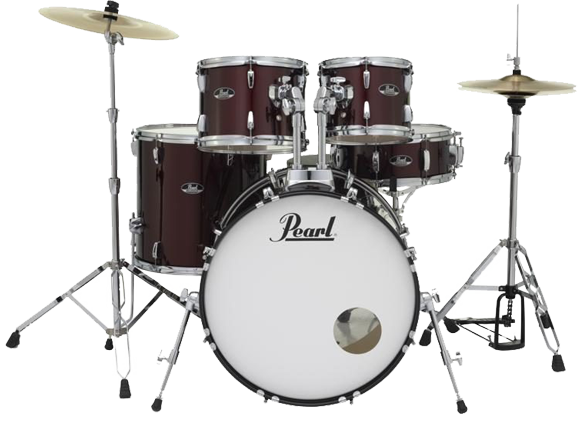

How Expensive Is A Percussion Instrument?
The drum kit is one of the most well-known instrument in the Percussion section. However, they are one of the most expensive instruments in Percussion, averaging at about $300 - $600.
Learn More